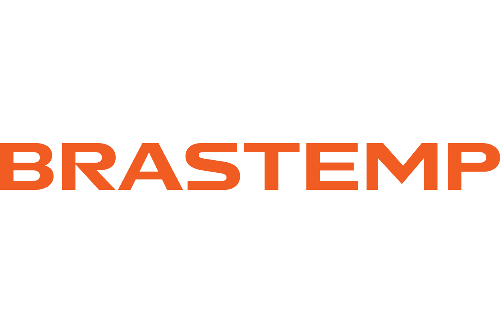
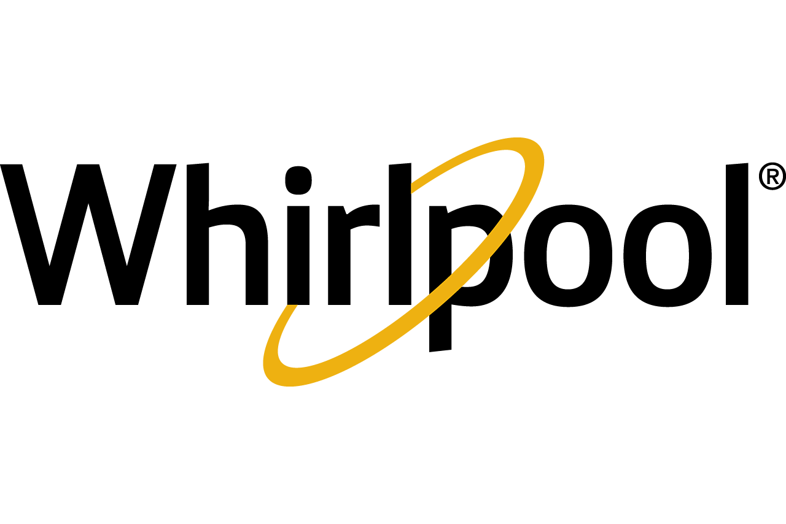

I automate everything, brrrr
Software Engineer. In my spare time, I'm kind of a cook... (Well, I try)
What I Do
- Task Automation End-to-end process automation, reducing analysis time with scripts, smart tools, and API orchestration.
- Machine Learning Predictive models and classification algorithms applied to market data, product performance, and customer satisfaction.
- Computer Vision Computer vision systems for image analysis and processing in industrial and product contexts.
- Chatbot Development AI-powered chatbots for customer support, workflow automation, and integration with internal systems.
- Robotic Process Automation Automating repetitive tasks at scale with RPA, eliminating manual work and boosting operational efficiency.
- Business Intelligence Dashboards, KPIs, and data analysis for strategic decision-making in logistics, cost, and performance.
- Software Development Building systems, integrations, database orchestration, and APIs to enable corporate processes.
About
5 years building systems that make businesses move faster.
Software Engineer with solid experience in Systems Automation, Software Development, Machine Learning, and Business Intelligence. Throughout my career, I've worked on reducing analysis time through automation, developing chatbots, orchestrating APIs, and delivering insights that directly impacted product strategy and customer satisfaction.
I used to work at
Market analysis for the Galaxy product lines — Mobile, Wearables, Tablets & Smartwatch. Data analysis, field product performance tracking, and national and worldwide market satisfaction insights.

Part of the Whirlpool Group. Systems development and automations for process performance tracking, KPI monitoring, database orchestration, and system integrations.

Logistics analysis, cost optimization, and process performance monitoring across the group's operations.

Software engineering and automation solutions.